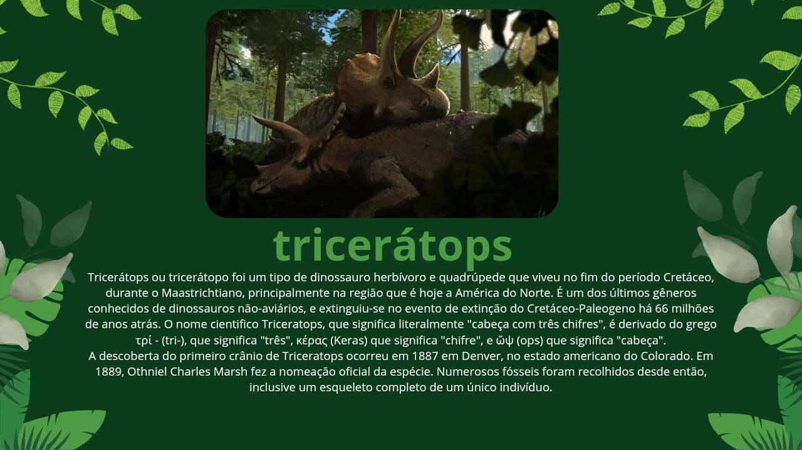
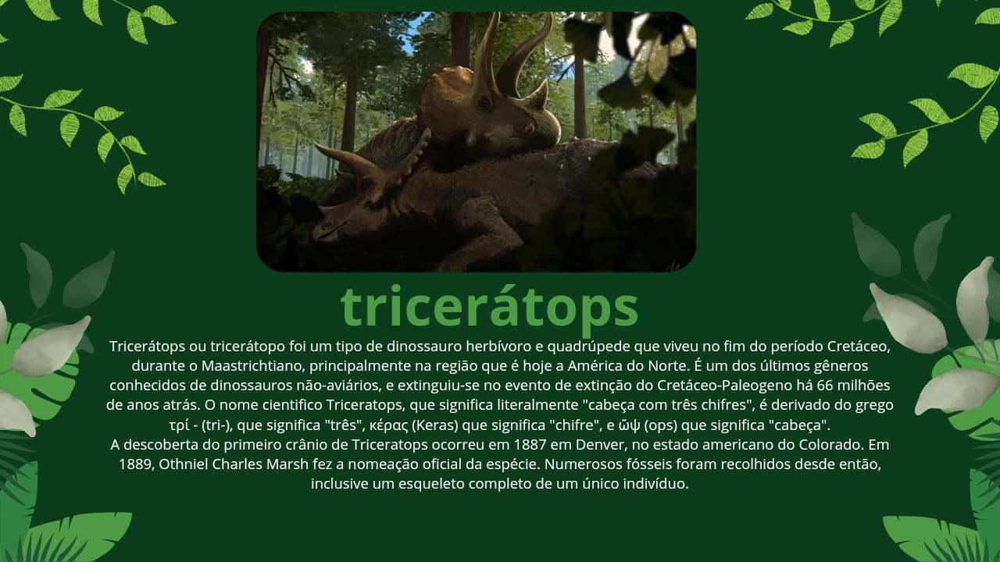

Dinossauros, oque foram?
Dinossauros foram répteis que viveram em nosso planeta durante a Era Mesozoica, sendo os primeiros registros desses animais datados do período Triássico. O termo é usado para se referir a dois grupos de répteis, pertencentes às ordens Saurischia e Ornithischia. Diferentes espécies de dinossauros são conhecidas, as quais variam muito em estrutura do corpo, hábito de vida e tipo de alimentação, sendo reconhecidos animais herbívoros, carnívoros e onívoros. Sem dúvida, a teoria mais conhecida para explicar a extinção dos dinossauros foi a queda de um meteorito em nosso planeta há cerca de 66 milhões de anos.
Triássico:
O período Triássico (“tri” = três) é o período de tempo correspondente a 250 a 199 milhões de anos atrás, sendo o primeiro período da Era Mesozóica. Foi nomeado assim para definir o conjunto de três camadas vermelhas e sequenciais de rochas distintas encontradas em toda Alemanha, onde foram nomeados.
O Triássico inicia após a primeira grande extinção em massa, o que deixou a biosfera pobre em biodiversidade, levando muito tempo para a Terra se recuperar dessa crise. Lentamente, durante esse período, novas faunas e floras foram surgindo, repovoando o planeta após essa mega extinção que ocorreu no final do período Permiano. As plantas gimnospermas iniciam o domínio dos continentes, assim como os répteis. Surgiram os primeiros dinossauros, bem como os mamíferos ovíparos.
Em 1834, Friedrich von Alberti foi responsável por nomear o período. Além disso, o nome Triássico foi dado por causa das três camadas distintas de rocha encontradas em regiões da Alemanha.
As três camadas eram arenitos vermelhos, cobertos por calcário marinho, seguidos por evaporitos e arenitos continentais.
Acima de tudo, o início do período é marcado pela formação de um Oceano na Pangeia. Por causa do novo oceano, o clima foi alterado na região, o que permitiu várias transformações.
Clima do período Triássico:
Antes do período Triássico, com a unidade da Pangeia, o continente era quente e seco. Certamente isso era mais forte nas áreas do interior, com clima árido e existência de vários desertos. Em contraste, quanto mais próximo das áreas costeiras, mais úmido e ameno ficava o clima.
Além disso, nos polos, o clima era bem diferente do atual. As condições eram ideais para o desenvolvimento da vida. Isso acontecia porque ainda não havia gelo por ali, mas sim áreas de floresta, populadas por animais vertebrados.
Por fim, na flora, as pteridospermas começaram a dar lugar às gimnospermas. Enquanto isso, na fauna, répteis eram a espécie dominante.
Um exemplo visual do clima do triássico:
passe o mouse visualizar.
Datação e subdivisões
O Triássico é normalmente separado em Inferior, Médio e Superior, com rochas e faunas correspondentes que são:
Triássico Superior
Reciano (203,6 ± 1,5 – 199,6 ± 0,6 Milhões de anos)
Noriano (216,5 ± 2,0 – 203,6 ± 1,5 Milhões de anos)
Carniano (228,0 ± 2,0 – 216,5 ± 2,0 Milhões de anos)
Triássico Médio
Ladiniano (237,0 ± 2,0 – 228,0 ± 2,0 Milhões de anos)
Anisiano (245,0 ± 1,5 – 237,0 ± 2,0 Milhões de anos)
Triássico Inferior
Olenekiano (249,7 ± 0,7 – 245,0 ± 1,5 Milhões de anos)
Indiano (251,0 ± 0,4 – 249,7 ± 0,7 Milhões de anos)
Especies do triassico:
O fim do Triassico
O fim do Triássico, há 201 milhões de anos, foi marcado por outro aumento na intensidade de atividades vulcânicas. Os efeitos não foram tão devastadores quanto os ocorridos durante a extinção do fim do Permiano, mas foram severos o suficiente a ponto de criar um clima global instável. A história dessa extinção ainda está sendo desvendada, mas é possível que os primos dos crocodilos e outros répteis do Triássico não tenham suportado os picos de temperatura global e o posterior resfriamento. Dinossauros e pterossauros, no entanto, conseguiram regular sua temperatura corporal graças a sua penugem na forma de protopenas. Nessa época, tanto dinossauros quanto pterossauros haviam se diversificado em diversos grupos adaptáveis. Dinossauros ligeiros, pequenos e carnívoros viviam ao lado de enormes herbívoros de pescoço longo e os pterossauros foram os primeiros vertebrados capazes de voar.

Jurássico:
Jurássico é o segundo período geológico da Era Mesozóica, compreendido aproximadamente entre 200 a 155 milhões de anos atrás, e foi marcado pelo começo da expansão dos dinossauros pelo planeta.
Foi também durante o Jurássico que a separação dos continentes, que em outrora era um imenso bloco de terra chamado de Pangéia, começa a ficar mais evidente.Jurássico é o segundo período geológico da Era Mesozóica,
compreendido aproximadamente entre 200 a 155 milhões de anos atrás, e foi marcado pelo começo da expansão dos dinossauros pelo planeta. Foi também durante o Jurássico que a separação dos continentes,
que em outrora era um imenso bloco de terra chamado de Pangéia,
começa a ficar mais evidente.
Com a separação dos continentes, o clima na Terra também começa a mudar.
As temperaturas começam a ficar mais amenas e equilibradas,
favorecendo o aparecimento de gigantescas florestas temperadas e úmidas.
Etimologicamente, o termo “Jurássico” foi criado em referência às montanhas Jura,
que estão localizadas atualmente nos Alpes franceses e que apresentam grandes
quantidades de rochas oriundas deste período.
Clima do jurassico
O período Jurássico foi uma época de grandes mudanças climáticas, provocada principalmente pelo rompimento do supercontinente Pangea em duas massas menores, a Laurasia (que atualmente corresponde à América do Norte, Europa e Ásia), e Gondwana (hoje os territórios da América do Sul, África, Antártica, Austrália e Índia).
Jurassic Climate – O que é:
O termo “Jurassic Climate” refere-se ao clima predominante durante o período Jurássico, que ocorreu entre aproximadamente 201,3 milhões e 145 milhões de anos atrás. Este período é conhecido por suas condições climáticas quentes e úmidas, que favoreceram a proliferação de uma vasta diversidade de vida, incluindo os famosos dinossauros. A temperatura média global era significativamente mais alta do que a atual, criando um ambiente ideal para o desenvolvimento de florestas densas e ecossistemas ricos.
Características do Clima Jurássico
Durante o Jurássico, o clima era caracterizado por um ambiente tropical e subtropical, com grandes áreas cobertas por florestas. As temperaturas variavam pouco ao longo do ano, resultando em estações menos definidas. A presença de grandes mares interiores também influenciou o clima, criando umidade e favorecendo a formação de chuvas regulares. Essa combinação de fatores climáticos contribuiu para a biodiversidade que se desenvolveu nesse período.
Impacto nas Espécies de Dinossauros
O clima quente e úmido do Jurássico teve um impacto direto na evolução e na distribuição das espécies de dinossauros. Espécies herbívoras, como os saurópodes, prosperaram em meio à vegetação abundante, enquanto os predadores, como os terópodes, encontraram um ambiente propício para a caça. A diversidade de habitats, que variavam de florestas densas a áreas abertas, permitiu que diferentes grupos de dinossauros se adaptassem e evoluíssem de maneiras únicas.
Variações Climáticas ao Longo do Jurássico
Embora o Jurássico seja geralmente associado a um clima quente, houve variações significativas ao longo do período. O início do Jurássico foi marcado por um clima mais seco, mas à medida que o período avançava, a umidade aumentou, resultando em um ambiente mais favorável para a vida. Essas mudanças climáticas foram influenciadas por fatores geológicos, como a movimentação das placas tectônicas e a formação de novas massas de terra.
Um exemplo visual do clima do Jurassico:
passe o mouse visualizar.
Datação e subdivisões
O jurassico é dividido por tres periodos, assim como o triassico, entao teremos o jurassico inferior ,jurassico medio ,jurassico superior.
Jurássico inferior:
Hetangiano: Na escala de tempo geológico, o Hetangiano é a idade da época Jurássica Inferior do período Jurássico da era Mesozoica do éon Fanerozoico que está compreendida entre há 201,3 milhões e 199,3 milhões de anos, aproximadamente. A idade Hetangiana sucede a idade Reciana da época Triássica Superior do período Triássico de sua era e precede a idade Sinemuriana de sua época
Sinemuriano: Na escala de tempo geológico, o Sinemuriano é a idade da época Jurássica Inferior do período Jurássico da era Mesozoica do éon Fanerozoico que está compreendida entre há 199,3 milhões e 190,8 milhões de anos, aproximadamente. A idade Sinemuriana sucede a idade Hetangiana e precede a idade Pliensbaquiana, ambas de sua época.
Pliensbaquiano: Na escala de tempo geológico, o Pliensbaquiano é a idade da época Jurássica Inferior do período Jurássico da era Mesozoica do éon Fanerozoico que está compreendida entre há 190,8 milhões e 182,7 milhões de anos, aproximadamente. A idade Pliensbaquiana sucede a idade Sinemuriana e precede a idade Toarciana, ambas de sua época.
Toarciano: Na escala de tempo geológico, o Toarciano é a idade da época Jurássica Inferior do período Jurássico da era Mesozoica do éon Fanerozoico que está compreendida entre há 182,7 milhões e 174,1 milhões de anos, aproximadamente. A idade Toarciana sucede a idade Pliensbaquiana de sua época e precede a idade Aaleniana da época Jurássica Média de seu período.
Jurássico medio:
Aaleniano: Na escala de tempo geológico, o Aaleniano é a idade da época Jurássica Média do período Jurássico da era Mesozoica do éon Fanerozoico que está compreendida entre há 174,1 milhões e 170,3 milhões de anos, aproximadamente. A idade Aaleniana sucede a idade Toarciana da época Jurássica Inferior de seu período e precede a idade Bajociana de sua época.
Bajociano: Na escala de tempo geológico, o Bajociano é a idade da época Jurássica Média do período Jurássico da era Mesozoica do éon Fanerozoico que está compreendida entre há 170,3 milhões e 168,3 milhões de anos, aproximadamente. A idade Bajociana sucede a idade Aaleniana e precede a idade Batoniana, ambas de sua época.
Batoniano: Na escala de tempo geológico, o Batoniano é a idade da época Jurássica Média do período Jurássico da era Mesozoica do éon Fanerozoico que está compreendida entre há 168,3 milhões e 166,1 milhões de anos, aproximadamente. A idade Batoniana sucede a idade Bajociana e precede a idade Caloviana, ambas de sua época.
Caloviano: Na escala de tempo geológico, o Caloviano[1] é a idade da época Jurássica Média do período Jurássico da era Mesozoica do éon Fanerozoico que está compreendida entre há 163,5 milhões e 166,1 milhões de anos, aproximadamente. A idade Caloviana sucede a idade Batoniana de sua época e precede a idade Oxfordiana da época Jurássica Superior de seu período.
Jurássico superior:
Oxfordiano: Na escala de tempo geológico, o Oxfordiano é a idade da época Jurássica Superior do período Jurássico da era Mesozoica do éon Fanerozoico que está compreendida entre há 163,5 milhões e 157,3 milhões de anos, aproximadamente. A idade Oxfordiana sucede a idade Caloviana da época Jurássica Média de seu período e precede o Kimeridgiano de sua época.
Kimeridgiano: Na escala de tempo geológico, é a idade da época Jurássica Superior do período Jurássico da era Mesozoica do éon Fanerozoico que está compreendida entre há 157,3 milhões e 152,1 milhões de anos, aproximadamente. A idade Kimeridgiana sucede a idade Oxfordiana e precede a idade Titoniana, ambas de sua época.
Tithoniano: Na escala de tempo geológico, é a idade da época Jurássica Superior do período Jurássico da era Mesozoica do éon Fanerozoico que está compreendida entre há 152,1 milhões e 145 milhões de anos, aproximadamente. A idade Titoniana sucede a idade Kimeridgiana de sua época e precede a idade Berriasiana da época Cretácea Inferior do período Cretáceo de sua era.

Especies do jurássico:
O final do jurássico:
O fim do período Jurássico não teve uma grande extinção em massa porque muitos dos animais do
jurássico sobreviveram e passaram a evoluir no Cretáceo.
A maior parte da extinção afetou pequenos grupos marinhos onde algumas espécies acabaram sendo extintas.
"O fim do Período Jurássico marcou a transição para o Cretáceo, 146 milhões de anos atrás. Entre os principais acontecimentos, ocorreram o resfriamento das temperaturas do planeta Terra, o recuo do nível do mar,
e a extinção de algumas espécies marinhas e, também, de dinossauros."

Cretáceo:
Período Cretáceo é o último período geológico da Era Mesozoica. Foi, também, o período mais longo dessa era, durando entre 146 e 65,5 milhões de anos no passado geológico.
Os movimentos tectônicos de separação dos continentes durante o Cretáceo promoveram a maior abertura do Oceano Atlântico e a formação da Dorsal Mesoatlântica, além da separação definitiva entre América do Sul e África.
Os demais continentes começaram a tomar forma semelhante à atual, organizando-se em posições próximas das que conhecemos hoje. O nível do mar estava mais de 200 metros acima do seu atual nível,
e o clima quente do planeta foi se tornando mais ameno com o passar do tempo.
Os dinossauros continuaram a ser dominantes durante o Período Cretáceo, e junto deles novos mamíferos,
insetos e pássaros passaram a habitar o nosso planeta. A cobertura vegetal foi se tornando cada vez mais densa, com as primeiras florestas e o surgimento das angiospermas.
Ao final do Cretáceo, entretanto, parte significativa dessas formas de vida desapareceu por conta da extinção em massa que marcou o fim da Era Mesozoica. Dentre as extinções se destaca a dos dinossauros.
Clima do cretáceo:
Durante o Cretáceo o clima era ligeiramente mais quente e umido do que hoje em dia.
Não havia gelos nos pólos do planeta, mas a temperatura global era bem mais fria do que no Período Jurássico.
Animais viviam por toda parte, mesmo em áreas mais frias. As temperaturas da água nos polos rondava os 14°C,
o que permitia que gigantescos animais marinhos dominassem essa área.
As concentrações atmosféricas de gases com efeito estufa, especialmente dióxido de carbono, foram mais elevadas durante o Período Cretáceo em comparação com os níveis atuais. Esta situação pode ter contribuído para o aumento das temperaturas globais e para a ausência de gelo nas regiões polares.
Datação e subdivisões
O cretáceo e dividido por dois periodos: Cretáceo Inferior, Cretáceo Superior.
Na escala de tempo geológico, o Cretáceo ou Cretácico é o período da era Mesozoica do éon Fanerozoico que está compreendido entre há 145 milhões e 66 milhões de anos, aproximadamente. O período Cretáceo sucede o período Jurássico de sua era e precede o período Paleogeno da era Cenozoica de seu éon. Divide-se nas épocas Cretáceo Inferior e Cretáceo Superior, da mais antiga para a mais recente.
O Cretácico Inferior está compreendido entre há 145 milhões e 100,8 milhões de anos, aproximadamente. A época Cretácea Inferior sucede a época Jurássica Superior do período Jurássico de sua era e precede a época Cretácea Superior de seu período. Divide-se nas idades Berriasiana, Valanginiana, Hauteriviana, Barremiana, Aptiana e Albiana, da mais antiga para a mais recente.
O Cretácico Superior está compreendido entre 100,5 milhões e 66 milhões de anos, aproximadamente. A época Cretácea Superior sucede a época Cretácea Inferior de seu período e precede a época Paleocena do período Paleogeno da era Cenozoica de seu éon. Divide-se nas idades Cenomaniana, Turoniana, Coniaciana, Santoniana, Campaniana e Maastrichtiana, da mais antiga para a mais recente
Especies do Cretáceo:
 

A extinçao dos
dinossauros
No final do período Cretáceo ocorreu a extinção dos dinossauros e de diversas outras espécies de animais e plantas. Existem muitas teorias sobre essa extinção em massa de organismos vivos, e uma delas é a de que certos movimentos sofridos pelos continentes provocaram mudanças nas correntes marítimas e também no clima do planeta. Isso fez a temperatura baixar, o que causou invernos mais rigorosos, consequentemente levando ao desaparecimento dos seres vivos que habitavam a Terra.

A teoria do
meteoro
Outra teoria sobre a extinção dos dinossauros, e a que é mais aceita pela comunidade científica,
sé a de que um asteroide com aproximadamente 10 km de diâmetro tenha atingido a superfície da Terra,
gerando uma explosão semelhante a 100 trilhões de toneladas de TNT.
"Em 1990 essa teoria foi reforçada depois que um grupo de cientistas encontrou, no México,
uma cratera com aproximadamente 180 km de diâmetro. Estudos geológicos realizados no local sugerem que essa colisão teria ocorrido há 65 milhões de anos, coincidindo com a época da extinção dos dinossauros.
Outro fator muito importante e que dá grande apoio a essa teoria é a descoberta de uma grande concentração de irídio (mineral raro na Terra, mas muito encontrado em meteoritos) em rochas do período Cretáceo.
Algumas especies de
dinossauros sobreviveram?
Mesmo com o desaparecimento de inúmeras espécies, algumas formas de vida conseguiram sobreviver. Quando encontraram um ambiente com condições adequadas, começaram a se proliferar, originando novos habitats e consequentemente novos nichos ecológicos.